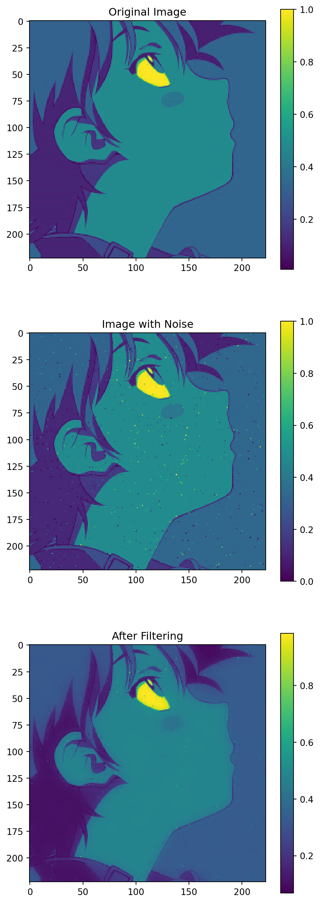

在一個雙目立體視覺項目中，我從一位師兄那裏瞭解到了導向濾波算法（guided image filtering）[1]。引入這個算法來平滑雙目圖像的匹配代價后，在僅使用非常基本的立體匹配算法的前提下，輸出的深度圖質量立竿見影地有了提高。就像何凱明的ResNet、Mask R-CNN等工作一樣，他的導向濾波算法也給我留下了非常好的印象。
本文記錄了我對該算法的理解，並提供了一份簡單的Python代碼實現。
1 問題背景
導向濾波算法要處理的是如何在平滑圖像的同時“保邊”的問題——既要平滑圖像，但是又不能讓原圖像中包含綫條細節的部分變模糊。不僅是立體匹配算法，人像美化、圖像去霧等應用領域都有類似的需求。在導向濾波之前，人們往往應用雙邊濾波器（bilateral filter）來應對。但是雙邊濾波器的時間複雜度不盡如人意，而且在應用於圖像細節增强時會發生“梯度反轉（gradient reversal）”問題。
在介紹導向濾波之前，先給出基本定義： 記輸入圖像為\(p\)，引導圖為\(I\)，輸出圖像為\(q\)，一個綫性平移可變濾波（linear translation-variant filter）過程可定義爲： \[ q_i = \sum_j W_{ij}(I) p_j， \tag{1}\] 其中，i和j是像素的索引，濾波器核\(W_{ij}\)是導向圖\(I\)的函數。濾波器核\(W_{ij}\)與\(p\)無關，故我們稱該濾波器相對於\(p\)是綫性（linear）的。\(W_{ij}\)與像素位置有關，即不同位置的濾波器核也不同，故稱它是平移可變（translation-variant）的。雙邊濾波和導向濾波都可以歸於此類。
2 雙邊濾波
聯合雙邊濾波器（joint bilateral filter）的濾波器核\(W^{bf}\)可以用如下公式表示： \[ W^{bf}_{ij} = \frac{1}{K_i} \exp(-\frac{\left|\vec x_i - \vec x_j\right|^2}{\sigma_s^2}) \exp(-\frac{\left| I_i - I_j \right|^2}{\sigma_r^2}). \tag{2}\]
其中\(\vec x\)為像素位置，\(K_i\)是使得\(\sum_j W_{ij}^{bf}=1\)的縮放係數。\(\sigma_s,\sigma_r\)是調整位置相似度和灰度/顔色相似度的參數。當\(I\)=\(p\)時，聯合雙邊濾波器退化為雙邊濾波器（bilateral filter）。
從公式中容易看出，雙邊濾波為位置相近和像素值相近的像素賦予更高的權重。
2.1 時間複雜度
雙邊濾波的時間複雜度為\(O(Nr^2)\)，其中\(r\)為濾波器窗口的尺寸。在采取近似算法，犧牲圖像質量的情況下，雙邊濾波能取得\(O(N)\)的時間複雜度。
2.2 梯度反轉問題
導向濾波原論文[1]指出，在應用雙邊濾波做細節增强時，雙邊濾波器會出現梯度反轉問題。這是因爲在圖像上梯度較大的區域，像素變化劇烈，像素之間相似度低，公式 2中的權重都不高，導致濾波結果不穩定。
3 導向濾波
導向濾波一方面在時間複雜度方面較雙邊濾波器有優勢，另一方面通過假設輸出圖是導向圖的綫性變換，減輕了梯度反轉問題。
導向濾波器的核心假設是，在以像素\(k\)為中心的窗口\(\omega_k\)内，輸出圖像\(q\)可表示爲導向圖\(I\)的綫性變換： \[ q_i = a_k I_i + b_k , \forall i \in \omega_k, \tag{3}\] 其中\((a_k, b_k)\)被假設為窗口\(\omega_k\)内的常量。設窗口是半徑爲\(r\)的方形。在窗口内，由於\(\nabla q = a\nabla I\)，所以我們可以認爲輸出圖像保留了導向圖的梯度趨勢。
為求解公式 3，可最小化如下代價函數： \[ E(a_k, b_k) = \sum_{i\in \omega_k} ((a_k I_i + b_k - p_i)^2 + \epsilon a_k^2). \tag{4}\] 後續我們將看到，\(\epsilon\)用於避免\(|a_k|\)過大。
最小化公式 4的解如下： \[ \begin{aligned} a_k &= \frac{\frac{1}{|\omega|}\sum_{i\in \omega_k}I_ip_i - \mu_k \bar p_k}{\sigma^2_k + \epsilon}\\ b_k &= \bar p_k - a_k \mu_k. \end{aligned} \tag{5}\] 其中，\(\mu_k\)和\(\sigma_k^2\)分別爲窗口\(\omega_k\)内\(I\)的均值和方差，\(\left|\omega\right|\)是窗口\(\omega_k\)内的像素數量，\(\bar p_k\)是\(\omega_k\)内，圖像\(p\)的像素均值。
至此，我們構建了在窗口\(\omega_k\)内的濾波規則。但是，像素\(q_i\)被包含在多個窗口中，每個窗口在\(i\)位置的濾波結果都不相同。對此，導向濾波簡單地計算所有窗口的濾波結果的平均。即 \[ \begin{aligned} q_i &= \frac{1}{|\omega|} \sum_{k:i\in\omega_k}(a_kI_i+b_k) \\ &= \bar a_iI_i+\bar b_i \end{aligned} \tag{6}\] 其中\(\bar a_i = \frac{1}{|\omega|} \sum_{k\in\omega_i} a_k\)，\(\bar b_i = \frac{1}{|\omega|} \sum_{k\in \omega_i}b_k\)
經過這個平均操作，我們無法保證\(\nabla_q\)是\(\nabla_I\)的綫性變換，但我們仍然假設\(\nabla_q\)的梯度與\(\nabla_I\)的梯度是接近的。
4 Python實現
以下代碼給出了導向濾波器的簡單Python實現。其計算參考公式 5, 公式 6。
import cv2 as cv
def guided_filter(input_image, guide_image, kernel_radius, epsilon):
d = kernel_radius * 2 + 1
window_size = d**2
I_mean = cv.blur(guide_image, (d, d))
I_sq_mean = cv.blur(guide_image**2, (d, d))
sigma_sq = I_sq_mean - I_mean**2
Ip_mean = cv.blur(guide_image * input_image, (d, d))
p_mean = cv.blur(input_image, (d, d))
a = (Ip_mean - I_mean * p_mean) / (sigma_sq + epsilon)
b = p_mean - a * I_mean
a_mean = cv.blur(a, (d, d))
b_mean = cv.blur(b, (d, d))
q = a_mean * guide_image + b_mean
return q 4.1 效果測試
本節用具體的示例展示了導向濾波的效果和特點。
首先，我們讀取一張圖像，並將其轉換到合適的格式和尺寸。
import numpy as np
import matplotlib.pyplot as plt
np.random.seed(0)
img = cv.imread('test_img.png', cv.IMREAD_COLOR)
img = cv.cvtColor(img, cv.COLOR_BGR2RGB).astype(np.float32) / 255.
img = cv.resize(img, None, fx=0.5, fy=0.5)
img_gray = np.mean(img, axis=-1)
plt.imshow(img_gray)
plt.title('Original Image');接著，爲原圖像加上簡單的噪聲：
img_gray_with_noise = img_gray * 1
coords = tuple(np.random.randint(0, size - 1, 1000) for size in img_gray.shape)
img_gray_with_noise[coords] += np.random.randn(len(coords[0]), ) * 0.2
img_gray_with_noise = np.clip(img_gray_with_noise, 0, 1)
plt.imshow(img_gray_with_noise)
plt.title('Image with Noise')
plt.colorbar();在噪聲圖上應用先前寫好的導向濾波實現（以噪聲圖為導向圖），結果如下：
r = 5
out_gray = guided_filter(
img_gray_with_noise,
img_gray_with_noise,
kernel_radius=r,
epsilon=0.01
)
plt.figure(figsize=(6, 18))
plt.subplot(311)
plt.imshow(img_gray)
plt.title('Original Image')
plt.colorbar()
plt.subplot(312)
plt.imshow(img_gray_with_noise)
plt.title('Image with Noise')
plt.colorbar()
plt.subplot(313)
plt.imshow(out_gray)
plt.title('After Filtering')
plt.colorbar()
plt.show()
從濾波結果中可以看到，圖像中角色面部大部分的噪點都被成功的平滑了。美中不足的是，綫條附近的噪點仍然被保留下來。這是因爲導向濾波是一個保邊的濾波器。如果遇到圖像的邊緣，那麽這個地方的平滑效果就會降低。
4.2 時間複雜度和加速方法
與聯合雙邊濾波相比，導向濾波的優勢之一使其簡單的實現方式和其較低的時間複雜度。下面將討論如何高效的實現導向濾波算法。
從上面提供的代碼實現可以看出，導向濾波是固定若干步均值濾波構成的。那麽問題就變成如何高效地完成均值濾波。
積分法
一個非常有名，應用廣汎的計算均值濾波的方法是積分法。設輸入圖像\(p\)的形狀是大小為\(h\times w\)的矩形，我們可以\(O(N)=O(h\times w)\)的時間複雜度得到其積分圖\(F\)，大小爲\((h+1)\times(w+1)\)。對於\(F\)上的任意像素\((i, j)\)， \[F(i, j) = \sum_{x < i, y < j} p(i, j),\] 那麽矩形區域\(x_1 <= x < x_2, y_1 <= y < y_2\)内像素的和等於 \[
F(x_2, y_2) - F(x_2, y_1) - F(x_1, y_2) + F(x_1, y_1).
\] 於是基於積分圖便可以實現\(O(N)\)時間複雜度的均值濾波。基於這個理由，我們說導向濾波的時間複雜度是\(O(N)\). 注意\(O(N)\)表明該算法與窗口半徑\(r\)無關，因此我們可以任意選擇\(r\)的大小!
這裏我想插入一點個人的小看法。基於積分法的\(O(N)\)時間複雜度是基於CPU實現的。實際應用中，我們常常會選擇GPU來實現均值濾波。這時候并不能認爲\(r\)是一個與算法效率無關的參數。
圖片縮放法
另一個優化角度是從圖像分辨率出發。導向濾波的結果由輸入圖像和導向圖共同決定。在導向圖和原輸入圖的代價不一樣昂貴時，我們可以考慮采用低分辨率的圖像。例如，采用\(\frac{1}{2}\)大小的輸入圖像和與原圖片尺寸相同的導向圖，這可能使我們能在節省計算量的情況下，不犧牲太多的圖像質量。
5 理論分析
5.1 \(\epsilon\)的作用
假設使用原圖作爲導向圖，即\(I=p\)。若\(\epsilon = 0\)，則顯然 \[ \begin{aligned} a_k &= \frac{\frac{1}{\left|\omega\right|} \sum_{i\in\omega_k} I_i^2 - \mu_k^2}{\sigma_k^2} \\ &= \frac{\sigma_k^2}{\sigma_k^2 + \epsilon} \\ &= 1 \\ b_k &= \bar p_k - a_k \mu_k \\ &= \mu_k - \mu_k \\ &= 0 \end{aligned} \] 此時，輸出等於輸入。（但是實踐中公式 5中有分母\(\sigma_k^2+\epsilon\)，我們需要取\(\epsilon > 0\)才能避免除0異常。）
若\(\epsilon > 0\)，分兩種極端的情況討論：
一、窗口\(\omega_k\)内是平坦區域，即\(\sigma_k = 0\)，此時 \[
\begin{aligned}
a_k &= \frac{\sigma_k^2}{\sigma_k^2 + \epsilon} \\
&= 0 \\
b_k &= \bar p_k - a_k \mu_k \\
&= \bar p_k
\end{aligned}
\] 此時導向濾波退化為均值濾波。
二、窗口\(\omega_k\)内像素方差大，即\(\omega_k\rightarrow\infty\)，此時 \[
\begin{aligned}
a_k &= \frac{\sigma_k^2}{\sigma_k^2 + \epsilon} \\
&\approx 1 \\
b_k &= \bar p_k - a_k \mu_k \\
&\approx 0
\end{aligned}
\] 此時輸出約等於輸入。
一般的，可以認爲導向濾波通過比較\(\epsilon\)和\(\sigma_k^2\)的大小調控圖像的平滑程度。如果\(\epsilon\)遠大於方差\(\sigma_k^2\)，那麽\(a_k\)接近于0，圖像變平滑；反之若\(\epsilon\)遠小於方差，那麽平滑程度便會削弱。